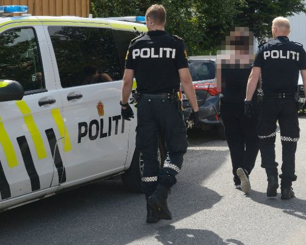
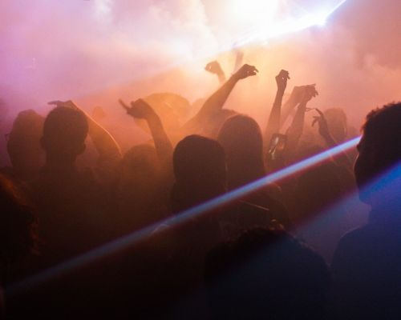

KEEG FESTIVAL LINEUP 2021
Yung Lean (SE)
Arif og Unge Ferrari
Death Grips (US)
Bladee (SE)
King Skurk One
612
Cezinando
Jouska
VIKING_DEATH_TRAP.EXE
Siste nytt:
Pils blir rimelig dyrt i år
KEEG festival må tjene penger, derfor koster pilsen i år 100 kroner for 0.4L, vi bruker selvfølgelig ca$hless. Er du ikke glad i pils kan du kjøpe vin, vi selger økologisk naturvin til 200kr per glass. Du må fylle opp kortet med minimum 1000 kroner. Har du ikke dekning på konto kan vi anbefale vår sammarbeidspartner mastercard. Med mastercard går du aldri tom for penger og kan alltid bli full. Baksiden er at du blir full av gjeld og beskymringer.

Politiet er på plass på festivalen
Om du er kriminell, glad i rusmiddler bortsett fra dyr øl, eller generelt glad i blind vold, tagging og lignende hobbyer er ikke dette festivalen for deg. Vi anbefaler deg heller å ta en tur på danskebåten, eller dra ut på noen lugubre steder i Oslo. Politiet er her for din sikkerhet, og stiller opp med hunder for å lukte etter narkotika. Om du lukter vondt, er dette ikke festivalen for deg. Hundene er snille og kan klappes. Politiet stiller også med droner for å overvåke og samle inn kul footage av moshpits.
Frivillig på festivalen
Vi søker frivillige til festivalen. Søknadskjema åpner snart. Som frivillig får du gratis billett, mot at du jobber 40 timer, med en gjennomsnittelig timeslønn på 40 kroner. Ikke fristende? Kjøp billett i steden. På en annen side er vi helt avheninge av frivillige arbeidere for å kunne tjene penger på festival. Billig arbeidskraft er en bærebjelke for festivalen. Prøvd å jobbe bakfull før? Da er dette jobben for deg. Som frivillig får du også en gratis øl-bong.
Artister
Yung Lean
Stockholmsrapperen Yung Lean overrasket hele den svenske rapscenen da videoen til «Kyoto» (2013) plutselig hadde millioner av spillinger på youtube. Internasjonale medier var raske til å anerkjenne Yung Lean som en original rapper, og han fikk raskt et stort skandinavisk og internasjonalt publikum. Yung Lean rapper om alt fra videospill til dop og energidrikker. Han produserer, skriver og går på scenen med crewet sitt, Sad Boys.